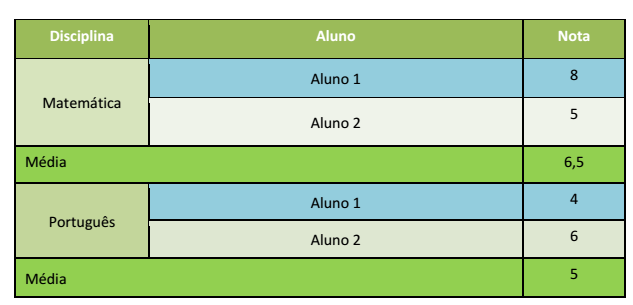

1 . Crie uma tabela em HTML conforme o modelo a seguir:
Prazo de entrega: 19/02/2017 23:59
1 .Crie uma página HTML com os seguintes requisitos::
Prazo de entrega: 19/02/2017 23:59
1. Criar um formulário HTML com 2 campos de input distintos e um botão submit.
2. Todos os campos devem ser obrigatórios
3. O método de envio do formulário deve ser do tipo GET
4. Utilize um <fieldset> para agrupar os elementos do formulário
Atividade em sala
1. Configurar a largura dos elementos fieldset para 500px;
2. Configurar uma borda e uma cor de fundo para os elementos fieldset;
3. Configurar o texto do legend para negrito e tamanho de 18px;
4. Alterar a fonte dos elementos required para laranja
5. Alterar cor de fundo do primeiro input e o botão submit para preto
Atividade em sala
1. Deixar o cabeçalho e o rodapé da página com um cor de fundo
2. Mostrar dois vídeos lado a lado u=lizando a propriedade float do CSS em conjunto com a tag <div>
Atividade em sala
1. Criar uma <div> em HTML com as seguintes propriedades no CSS – background-color, width, padding e border
2. Utilizar a propriedade box-sizing e alterar os valores das propriedades da div para ver o comportamento da propriedade box-sizing
Atividade em sala
Exemplo de um servlet com mapeamento no XML, sem usar anotation
Atividade em sala
1. Crie um Servlet com os métodos doGet e doPost
2. Cada um dos métodos deverá retornar como resposta um texto contendo qual o método que foi executado (doGet ou doPost), mais o texto “Meu primeiro Servlet Java”
3. Registre o Servlet no web.xml
4. Acesse o Servlet através do navegador e veja o resultado
Atividade em sala
1. Refaça a a@vidade 1 registrando o Servlet com anotação.
2. Tente executar o servlet sem remover o registro do Servlet no web.xml. O que acontece?
3. Registre o Servlet no web.xml
4. Tente executar o servlet removendo o registro do Servlet no web.xml. O que acontece?
Atividade em sala
1.Crie um Servlet com os métodos doGet e doPost
2. Cada um dos métodos deverá imprimir o tipo de requisição (GET ou POST) utilizada, além dos 2 valores passados como parâmetros
3.Crie uma página HTML com um formulário contendo dois campos de texto e um botão – Ao clicar no botão, o formulário deverá ser enviado para o Servlet u@lizando uma requisição GET
4. Depois envie o formulário usando uma requisição POST – Para mudar o @po da requisição, altere o atributo method do elemento form do HTML
Atividade em sala
1.Crie um Servlet com o método doPost
2. Crie uma página HTML com um formulário contendo dois campos de texto do @po Number e um botão – Ao clicar no botão, o formulário deverá ser enviado para o Servlet u@lizando uma requisição POST
3.No Servlet, obtenha os 2 valores inseridos no formulário u@lizando o método getParameterValues
4. Como resposta, o Servlet deverá retornar quais foram os 2 valores inseridos no formulário e a soma desses 2 valores
Atividade em sala